What Is a Battery Energy Storage System (BESS)?
A Battery Energy Storage System (BESS) is an advanced technological solution that stores electrical energy in battery units for later use, representing a fundamental shift in how we manage and distribute power. Unlike traditional energy systems that generate electricity on demand, BESS captures and stores energy when it's abundant and releases it when needed, creating a more flexible and reliable energy infrastructure.
At its core, a BESS is far more sophisticated than the batteries found in everyday devices. These systems use groups of interconnected batteries—primarily lithium-ion technology—to store electrical energy at scale, from residential applications to massive grid-scale installations. The technology enables energy to be stored during periods of low demand or high renewable generation and dispatched during peak consumption times or when renewable sources aren't producing power.
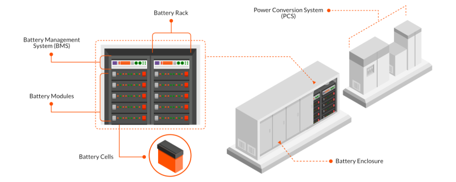
The Essential Components of BESS Technology
Modern BESS installations comprise several critical components working in harmony to ensure safe and efficient operation:
Battery Cells and Modules: The heart of any BESS, these cells are arranged in series or parallel configurations to meet specific voltage and capacity requirements. Lithium-ion batteries dominate the market, with lithium iron phosphate (LFP) becoming increasingly prominent for stationary storage due to its superior safety characteristics and longer lifespan.
Battery Management System (BMS): This crucial component monitors and manages battery performance, preventing overcharging, over-discharging, and overheating while balancing charge across individual cells. The BMS ensures optimal performance and extends battery life through intelligent monitoring and control.
Power Conversion System (PCS): The PCS converts direct current (DC) from batteries to alternating current (AC) for grid use and handles the reverse process during charging. This bidirectional capability is essential for seamless integration with existing electrical infrastructure.
Energy Management System (EMS): The EMS optimizes BESS operation by controlling when the system charges or discharges based on application requirements, energy prices, and demand patterns. Advanced systems incorporate artificial intelligence to predict optimal operating conditions and maximize efficiency.
Thermal Management: Sophisticated cooling systems maintain batteries within optimal temperature ranges, preventing overheating and ensuring safety and longevity. This component is particularly critical for large-scale installations where heat generation can be substantial.
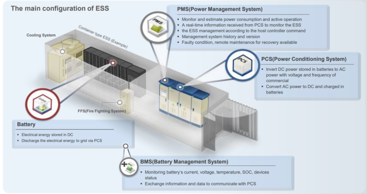
Why BESS Is Essential in Today's Energy Landscape
Enabling Renewable Energy Integration
The transition to renewable energy sources presents a fundamental challenge: the intermittent nature of solar and wind power. BESS provides the critical solution by storing excess energy generated during peak production periods and releasing it when renewable sources aren't generating power. This capability transforms intermittent renewable energy into a reliable, dispatchable power source, reducing our dependence on fossil fuels.
Grid Stabilization and Reliability
Battery storage systems are the fastest responding dispatchable power source on electric grids, capable of transitioning from standby to full power in under a second. This rapid response capability makes BESS invaluable for frequency regulation, voltage control, and providing ancillary services that maintain grid stability. As more renewable energy sources connect to the grid, BESS becomes increasingly essential for managing supply and demand fluctuations.
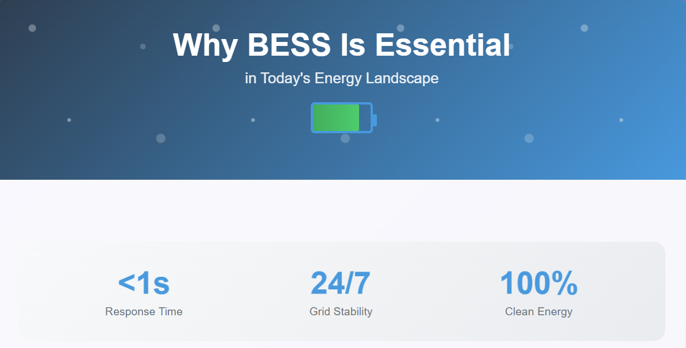
Economic Benefits and Cost Reduction
BESS enables significant cost savings through peak shaving and load shifting strategies. By storing energy during off-peak hours when electricity prices are lower and discharging during peak demand periods, BESS helps reduce energy costs for both utilities and consumers. The technology also eliminates the need for expensive peaker plants, which are typically inefficient and environmentally harmful.
Environmental Justice and Clean Air
BESS deployment can advance environmental justice by replacing fossil fuel peaker plants that disproportionately affect low-income and underserved communities. These aging facilities contribute to air pollution and carbon emissions in vulnerable neighborhoods, while BESS provides the same grid stability benefits without harmful emissions.
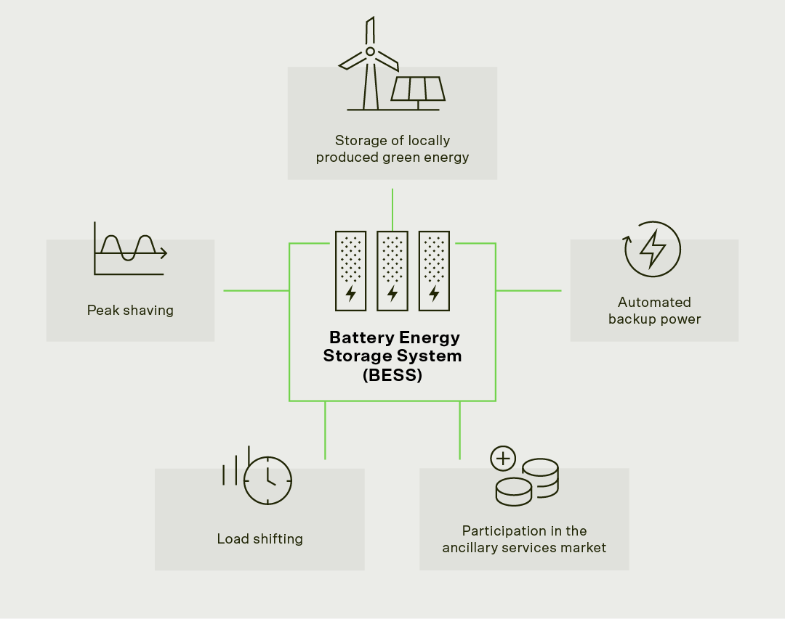
Real-World Success Stories
The Hornsdale Power Reserve: A Global Benchmark
The Hornsdale Power Reserve in South Australia stands as one of the most successful BESS deployments worldwide. Originally built by Tesla and Neoen with 100MW/129MWh capacity, this lithium-ion battery installation has exceeded expectations since its 2017 commissioning. The system has demonstrated remarkable effectiveness in frequency control, grid stabilization, and cost reduction, saving millions in ancillary service costs while improving grid reliability.
During a major grid outage in 2019, the Hornsdale facility responded within milliseconds, restoring stability and preventing cascading failures. The project's success led to a 50MW expansion, further demonstrating the scalability and value of large-scale battery storage.
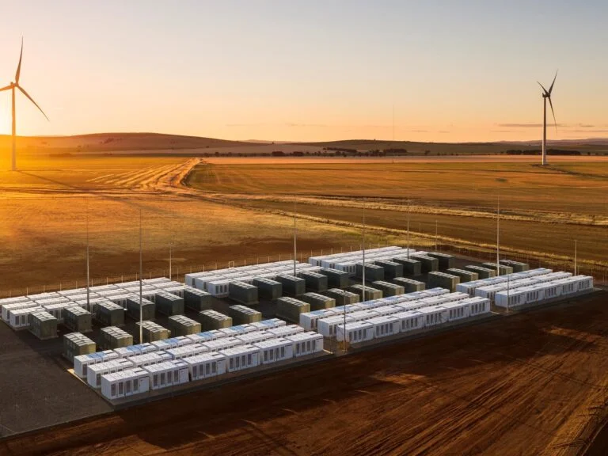
Rapid Global Deployment
Recent data shows explosive growth in BESS deployments worldwide. In March 2025 alone, 10.9GWh of grid-scale BESS entered commercial operations globally, representing a 29% year-over-year increase. The first quarter of 2025 saw 34.3GWh of new deployments, a staggering 65% increase compared to the same period in 2024.
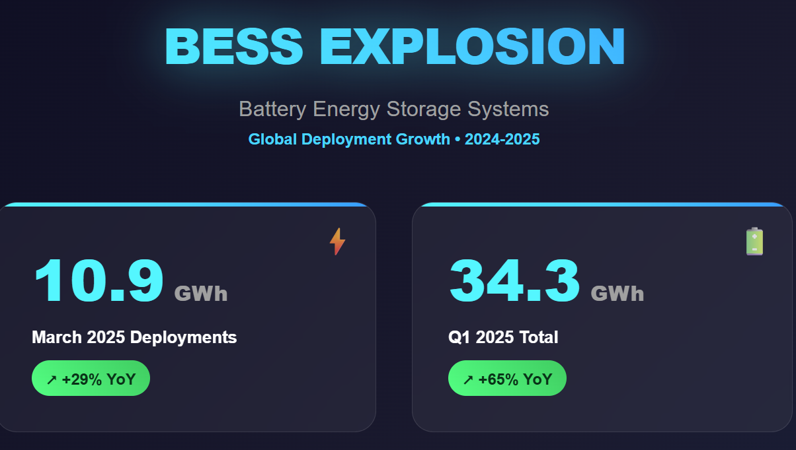
Market Growth and Economic Outlook
The global BESS market is experiencing unprecedented expansion, valued at USD 39.84 billion in 2025 and projected to reach USD 65.27 billion by 2034, growing at a CAGR of 5.68%. This growth is driven by falling battery costs, supportive government policies, and increasing renewable energy deployment.
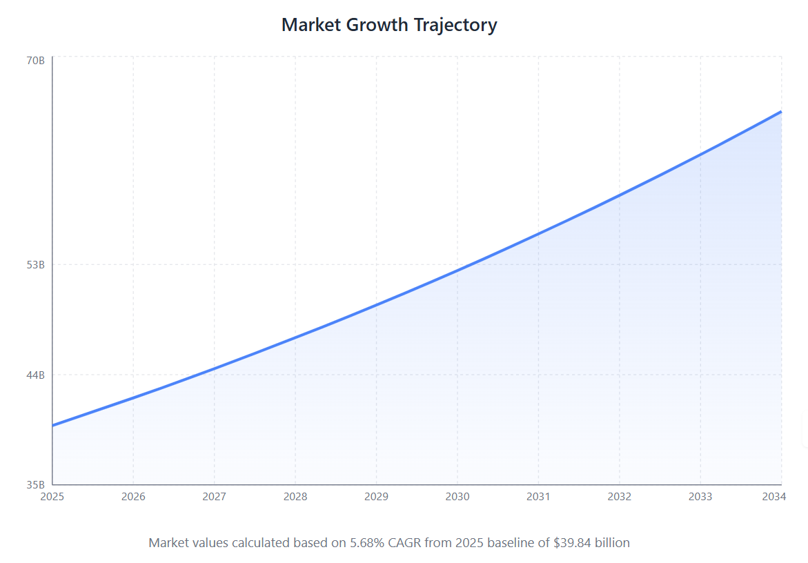
Key market drivers include:
- Rising adoption of renewable energy sources
- Advances in battery technology, particularly lithium-ion and emerging solid-state batteries
- Government incentives and regulatory support
- Grid modernization initiatives
- Growing demand for electric vehicles and smart energy systems
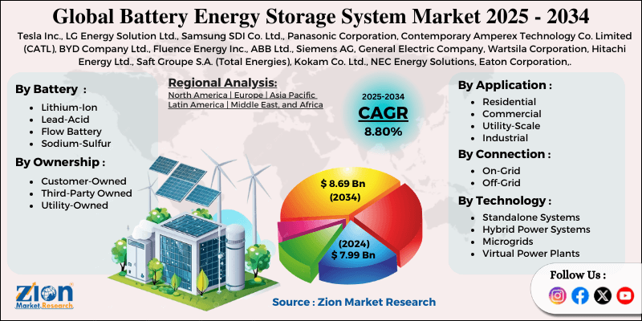
Technological Advances and Future Trends
Lithium Iron Phosphate (LFP) Dominance
LFP batteries are becoming the preferred choice for BESS applications due to their superior safety characteristics, longer cycle life, and cost-effectiveness. By 2024, LFP batteries captured 60% of the global market share, with projections reaching 63% by 2025. These batteries offer enhanced thermal stability and reduced fire risk compared to other lithium-ion chemistries.
Solid-State Battery Revolution
Solid-state batteries represent the next frontier in energy storage technology, offering higher energy density, improved safety, and extended lifespan compared to conventional lithium-ion batteries. The global solid-state battery market is projected to grow at a remarkable 49.4% CAGR from 2025 to 2032, reaching USD 6.31 billion.
Artificial Intelligence Integration
AI and machine learning are revolutionizing BESS operations through predictive maintenance, performance optimization, and intelligent grid management. These technologies enable batteries to operate more efficiently, last longer, and provide enhanced grid services through real-time analysis and automated decision-making.
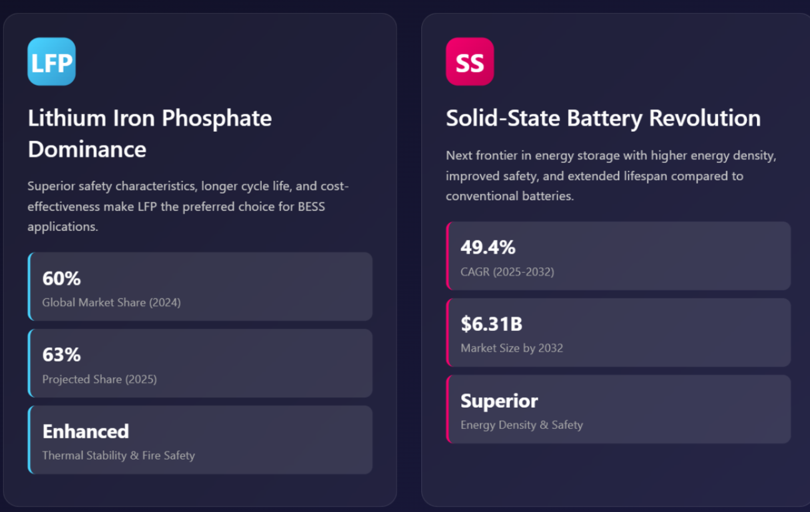
Challenges and Solutions
Safety Considerations
While BESS technology has proven generally safe, fire safety remains a critical concern, particularly with certain lithium-ion chemistries. The industry has responded with improved thermal management systems, advanced fire suppression technologies, and the adoption of safer battery chemistries like LFP. Proper installation by licensed professionals and regular monitoring are essential for maintaining system safety.
Economic and Technical Barriers
High initial investment costs continue to challenge widespread BESS adoption. However, rapidly declining battery prices and improved performance are making these systems increasingly economical. Government incentives and supportive policies are further reducing financial barriers and accelerating deployment.
Grid Integration Challenges
Integrating large-scale battery storage requires careful consideration of grid compatibility and system stability. Advanced grid management systems and smart technologies are being developed to optimize battery usage and maintain grid reliability as storage penetration increases.
Environmental Impact and Sustainability
BESS contributes significantly to environmental sustainability by enabling greater renewable energy integration and reducing fossil fuel dependence. However, the industry is also focusing on battery recycling and circular economy principles to address end-of-life environmental concerns. Efficient recycling technologies are being developed to recover valuable materials and minimize waste.
Applications Across Sectors
Residential Energy Storage
The residential BESS market is experiencing robust growth, valued at $15 billion in 2025 with a projected CAGR of 15% through 2033. Homeowners are increasingly adopting battery storage to achieve energy independence, reduce electricity costs, and ensure backup power during outages.
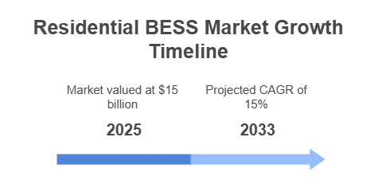
Commercial and Industrial Applications
Commercial and industrial facilities use BESS for peak shaving, load shifting, and backup power, resulting in significant cost savings and improved energy resilience. These applications are particularly valuable for critical infrastructure like hospitals and data centers.
Microgrid Solutions
BESS enables effective microgrid deployment in remote areas, islands, and regions with unreliable grid access. These systems combine renewable generation with battery storage to provide reliable, clean energy where traditional grid extension is impractical or uneconomical.
Regulatory Support and Policy Framework
Governments worldwide are implementing supportive policies to accelerate BESS deployment. India's National Framework for Promoting Energy Storage Systems and Viability Gap Funding programs exemplify how policy support can drive market growth. Similar initiatives in the United States, Europe, and other regions are creating favorable conditions for battery storage investment.
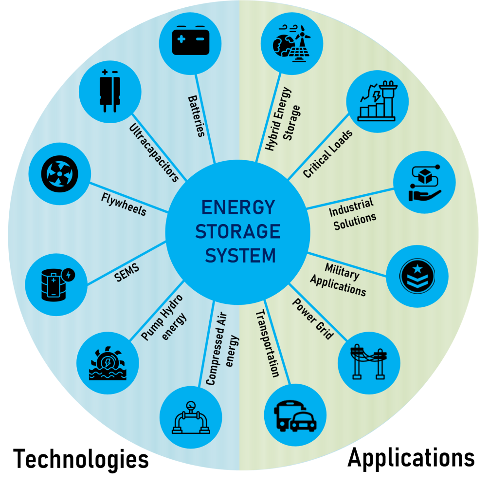
The Path Forward
Battery Energy Storage Systems represent a transformative technology that is reshaping the global energy landscape. As renewable energy adoption accelerates and grid modernization continues, BESS will play an increasingly critical role in ensuring reliable, clean, and affordable electricity. The combination of technological advances, falling costs, and supportive policies creates unprecedented opportunities for widespread BESS deployment.